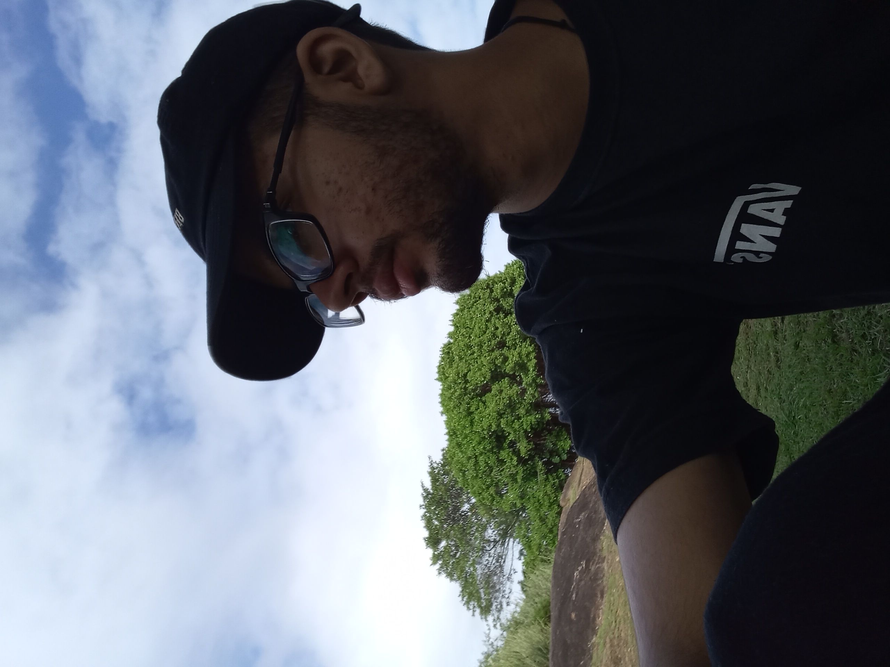

Aniversários
Infantis, de adultos e comemorações em família: a decoração, os detalhes, os parabéns e as expressões espontâneas de quem está na festa.
Fotógrafo de eventos · Aniversários e esportes
Cubro aniversários e esportes, onde a emoção acontece em frações de segundo. Vídeo, design e web completam a entrega, do convite à galeria final.

Sobre
Sou Felipe Moreira, profissional com formação técnica em Multimídia e experiência nas áreas de fotografia e administração. Minha paixão e especialidade estão na fotografia de eventos comemorativos, especialmente aniversários, e esportes.
Em cada festa, busco capturar emoções e momentos espontâneos que poderiam passar despercebidos. No esporte, procuro registrar o instante decisivo, a intensidade da disputa e a emoção de cada lance.
Minha formação em Multimídia ampliou meu olhar criativo e técnico, permitindo integrar fotografia, edição, audiovisual, design e tecnologia em meus projetos. Mais do que registrar imagens, busco contar histórias, transmitir sensações e criar registros que tornem cada momento inesquecível.
Portfólio
Coberturas
Infantis, de adultos e comemorações em família: a decoração, os detalhes, os parabéns e as expressões espontâneas de quem está na festa.
Jogos, campeonatos e treinos. Ação em alta velocidade, lances decisivos, a vibração da torcida e a emoção da vitória.
Tratamento de cor no Lightroom, seleção das melhores imagens e galeria pronta para compartilhar com todos.
Além da foto
Vídeos curtos e aftermovies de festas e jogos, com correção de cor e tratamento de imagem.
Convites, artes para redes sociais, cartazes de campeonato e identidade visual.
Interfaces claras e sites responsivos em HTML, CSS e JavaScript.
Movimento e volume para dar vida a ideias que a câmera sozinha não alcança.
Conteúdo visual pensado para comunicar e gerar resultado para a marca.
Uso de inteligência artificial como ferramenta de apoio ao processo criativo.
Ferramentas
Contato
Conte a ideia e a gente descobre juntos a melhor forma de transformá-la em imagem.
fgs092005@gmail.com